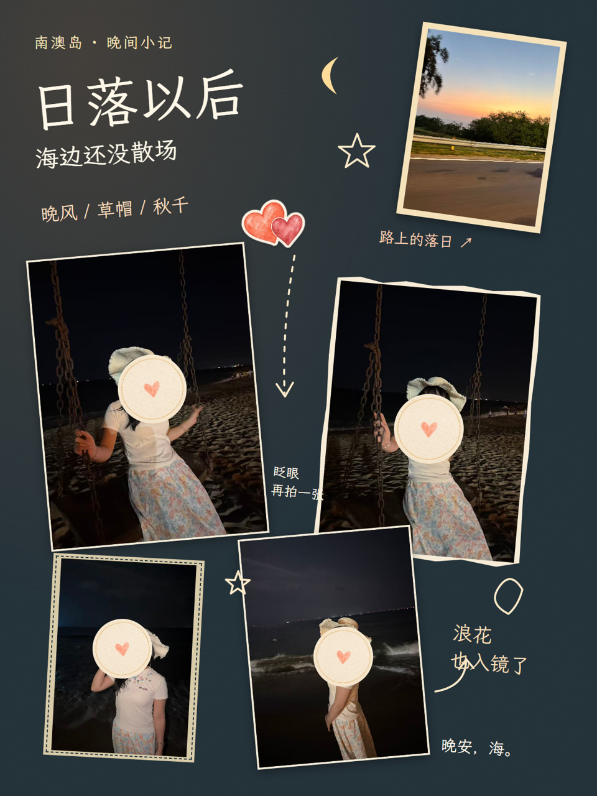
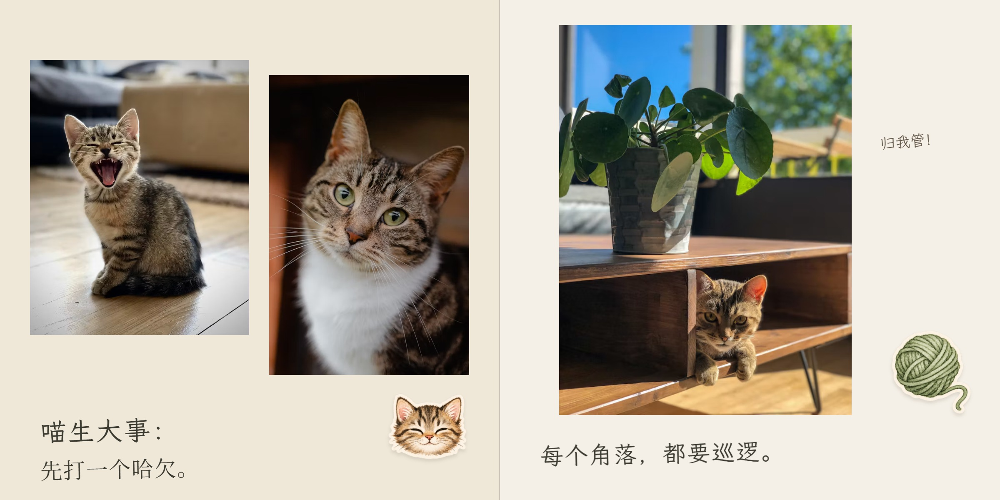
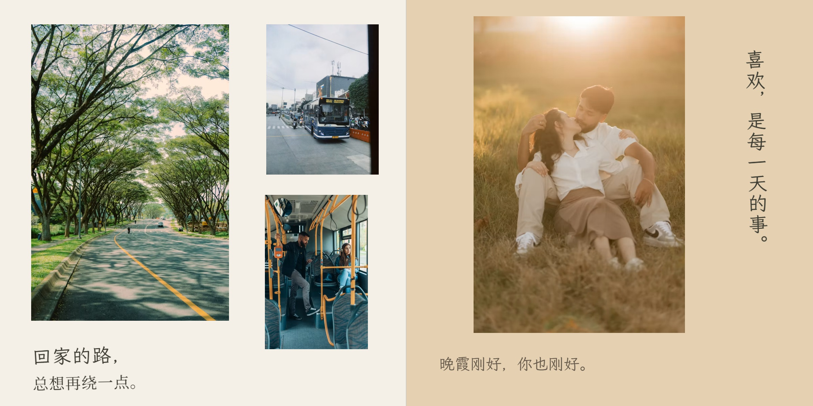

YOUR PHOTOS, A LITTLE MORE LOVED.
把照片，做成一份
舍不得合上的礼物。
AI读懂照片，帮你把零散瞬间串成故事。
从内页到封面，做一本属于你的相册。
量身排版专属贴纸按意见修改
DIFFERENT STORIES, DIFFERENT DESIGNS.
不同主题，不同设计。
小猫的日常、两个人的故事、一次旅行。每本书，都跟着照片长出自己的样子。

新功能！
Plog / 手账本模式
除了相册，Skill 新增了 Plog / 手账本模式。
在此模式中，可以手动对图片、贴纸和文字进行简单编辑。
“把这次出门的照片，做成 Plog。”
看新模式示例 →实拍小记 · 人脸已用贴纸遮挡 · 用户授权展示。
SAME PHOTOS, A DIFFERENT FEELING.
同样的照片，换一种喜欢。
告诉AI你喜欢的风格，重新设计同一组照片。
12张照片，三种示范。风格由你来定。


LITTLE DETAILS, MADE FOR YOUR PHOTOS.
看看照片，还能长出什么。
文案、贴纸、插画与背景，都从照片里的小事开始。

一个哈欠，一次巡逻，也值得认真留一页。

一起坐车、一起发呆，把普通的日子写成喜欢的样子。
A LITTLE MORE IMAGINATION.
照片之外，还能留住一点感觉。
在合适的地方，让一张照片成为插画、拼贴，或一张寄给未来的明信片。


七条创意路线按照片与许可选择。新增三张为摄影衍生示例，生成细节可能与原照不同。
ROOM FOR THE WORDS YOU WANT TO KEEP.
特别的故事，也有特别的位置。
你的下一本，会是什么故事？
安装Skill，把照片和几句描述交给Codex。先做小样，满意后慢慢补完整本。
“使用 $photo-book-studio，
我想做一本关于我们这一年的相册。”小Tips：iPhone传到Windows或Linux，可以用 LocalSend。想写长一点的开篇或结语，可以预留写信页，再按故事画背景。